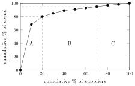

Definition
Goal: identify the critical suppliers on which the purchasing manager should concentrate. Steps:
- sort suppliers by annual purchase value, descending;
- compute each supplier's share of total purchases;
- compute the cumulative share;
- assign classes A, B, C.
| Class | Share of spend | Typical share of suppliers |
|---|---|---|
| A | ≈ 80% | ≈ 20–30% |
| B | ≈ 15% | middle |
| C | ≈ 5% | many small suppliers |
Worked example
| Code | Annual purchases | % of total | Cumulative % | Cum. % suppliers | Class |
|---|---|---|---|---|---|
| 64R | 68,000 | 68.0% | 68.0% | 10% | A |
| 89Q | 12,000 | 12.0% | 80.0% | 20% | A |
| 34T | 5,000 | 5.0% | 85.0% | 30% | B |
| 24Y | 4,000 | 4.0% | 89.0% | 40% | B |
| 98T | 2,000 | 2.0% | 91.0% | 50% | B |
| 56G | 2,000 | 2.0% | 93.0% | 60% | B |
| 55H | 2,000 | 2.0% | 95.0% | 70% | B |
| 21P | 2,000 | 2.0% | 97.0% | 80% | C |
| 94K | 1,500 | 1.5% | 98.5% | 90% | C |
| 71P | 1,500 | 1.5% | 100.0% | 100% | C |
Total 100,000. 80% of value depends on only 2 suppliers: even small discounts from them cut total spend more than any action on B and C. A 3% saving on 64R is worth 2,040 — more than the whole annual spend with 94K.
Model
ABC sets priorities: A → close management, negotiation, partnership; B → periodic review; C → simplify and automate ordering. It measures spend only; combine it with supply risk in the Kraljic matrix.
Pitfall
A class-C item can still stop the line (a cheap single-source part): ABC alone does not measure risk. Class limits are conventions, not laws.
Recall
Run the four steps on the table; draw the curve; say why 64R and 89Q are A.
Picture

Two suppliers out of ten account for 80% of the spend.